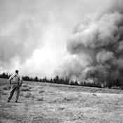
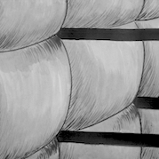
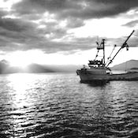

An Unusual Career Path¶
I grew up in upstate New York. I was in college studying painting at Syracuse University when I traveled west for a summer of commercial fishing in Alaska. This experience left me with a taste for adventure. After college I traveled west again and spent five years fighting forest fires for the U.S. Federal Government. During those five years I spent my winters with my wife in New Orleans and later upstate New York until I followed her permanently to Cambridge, Massachusetts. There I spent several years working for Harvard University, both administratively and as a teaching assistant in statistics. I eventually enrolled in graduate school at UMass Amherst, where I earned dual MBA and Public Policy master’s degrees. This led to my work in operations and systems at Jumpstart, a national non-profit based in Boston, my work in finance at Ford Motor Company, and my several years at EMC Corporation, a global technology firm now owned by Dell Technologies, where I supported strategic programs and eventually managed the company’s consulting business with two financial industry global customers in New York City.
  {kind=link}
{kind=link}
{kind=link}

Last revised: 2020-01-20